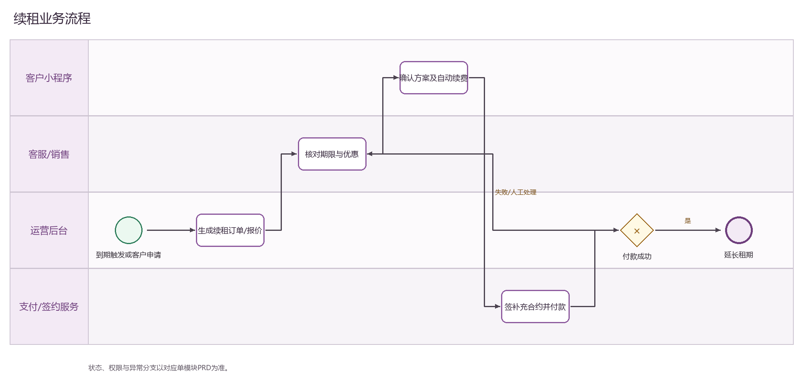

PRODUCT REQUIREMENTS
续租管理 PRD
下载 Word 文档续租管理 PRD
运营后台研发详细需求规格 · V2.0 · 2026-09-08
1 文档目标与范围
从到期识别、客户触达、报价、签约和付款完成续租闭环。 本文档明确页面字段、操作流程、业务规则、跨端契约、权限和验收条件。
| 属性 | 内容 |
|---|---|
| 文档编号 | OS-OPS-PRD-14 |
| 产品基线 | AiwaBot产品原型 V3.2 与 OneStorage运营后台原型 V1.1 |
| 版本 | V2.0 2026-09-08 |
2 页面结构与查询
2.2 筛选条件
| 筛选项 | 规则 |
|---|---|
| 任务、订单、客户或仓号 | 支持组合查询、重置和返回保留。 |
| 到期区间 | 支持组合查询、重置和返回保留。 |
| 流程节点 | 支持组合查询、重置和返回保留。 |
| 续租状态 | 支持组合查询、重置和返回保留。 |
| 店铺 | 支持组合查询、重置和返回保留。 |
| 负责人 | 支持组合查询、重置和返回保留。 |
3 列表字段规格
| 字段ID | 字段 | 来源 | 展示与交互规则 |
|---|---|---|---|
| OS-OPS-PRD-14-L01 | 续租任务 | 业务主域 | 详情与导出保持一致；空值显示—，不使用模拟值补齐。 |
| OS-OPS-PRD-14-L02 | 关联订单 | 服务端/关联主数据 | 显示订单编号并支持在有权限时跳转。 |
| OS-OPS-PRD-14-L03 | 客户 | 服务端/关联主数据 | 显示客户名称和客户编号，可跳转客户档案。 |
| OS-OPS-PRD-14-L04 | 仓号 | 业务主域 | 详情与导出保持一致；空值显示—，不使用模拟值补齐。 |
| OS-OPS-PRD-14-L05 | 到期日 | 服务端时间 | 按Asia/Hong_Kong显示；空值显示—，排序使用原始时间。 |
| OS-OPS-PRD-14-L06 | 流程节点 | 服务端枚举 | 以标签显示；筛选、导出和详情使用同一枚举文案。 |
| OS-OPS-PRD-14-L07 | 续租状态 | 服务端枚举 | 以标签显示；筛选、导出和详情使用同一枚举文案。 |
| OS-OPS-PRD-14-L08 | 操作 | 服务端/关联主数据 | 根据allowedActions显示查看、编辑及状态动作；后端再次鉴权。 |
4 新增与编辑表单
| 字段ID | 字段 | 控件 | 必填 | 校验与保存规则 |
|---|---|---|---|---|
| OS-OPS-PRD-14-F01 | 原订单 | 文本框 | 条件必填 | 去除首尾空格；保存原始值与标准化值。 |
| OS-OPS-PRD-14-F02 | 客户 | 文本框 | 条件必填 | 去除首尾空格；保存原始值与标准化值。 |
| OS-OPS-PRD-14-F03 | 仓位 | 文本框 | 条件必填 | 去除首尾空格；保存原始值与标准化值。 |
| OS-OPS-PRD-14-F04 | 原到期日 | 日期或日期时间 | 必填 | 服务端校验起止顺序、营业日和截止规则。 |
| OS-OPS-PRD-14-F05 | 续租租期 | 数字输入 | 条件必填 | 仅允许业务配置范围内的整数；服务端再次校验。 |
| OS-OPS-PRD-14-F06 | 新起止日期 | 日期或日期时间 | 必填 | 服务端校验起止顺序、营业日和截止规则。 |
| OS-OPS-PRD-14-F07 | 续租价格 | 金额输入 | 条件必填 | 输入大于等于0，最多两位小数；服务端以最小货币单位重算。 |
| OS-OPS-PRD-14-F08 | 优惠 | 文本框 | 条件必填 | 去除首尾空格；保存原始值与标准化值。 |
| OS-OPS-PRD-14-F09 | 付款计划 | 单选或下拉选择 | 必填 | 选项来自服务端字典；提交编码值，界面显示名称。 |
| OS-OPS-PRD-14-F10 | 负责人 | 单选或下拉选择 | 必填 | 选项来自服务端字典；提交编码值，界面显示名称。 |
| OS-OPS-PRD-14-F11 | 首次提醒时间 | 日期或日期时间 | 必填 | 服务端校验起止顺序、营业日和截止规则。 |
| OS-OPS-PRD-14-F12 | 通知渠道 | 单选或下拉选择 | 必填 | 选项来自服务端字典；提交编码值，界面显示名称。 |
| OS-OPS-PRD-14-F13 | 备注 | 多行文本 | 条件必填 | 最多500字；拒绝或异常原因不得只输入空白。 |
5 操作与处理流程
| 操作ID | 操作 | 前置条件与系统处理 | 结果与失败处理 |
|---|---|---|---|
| OS-OPS-PRD-14-A01 | 建立续租任务 | 从45天内到期订单生成，校验不存在开放任务。 | 成功后刷新详情和时间线；失败保留输入并显示错误码。 |
| OS-OPS-PRD-14-A02 | 发送提醒 | 按30、14、7天策略发送并记录送达。 | 成功后刷新详情和时间线；失败保留输入并显示错误码。 |
| OS-OPS-PRD-14-A03 | 记录客户回复 | 选择继续、考虑、拒绝或无法联系并更新下一步。 | 成功后刷新详情和时间线；失败保留输入并显示错误码。 |
| OS-OPS-PRD-14-A04 | 生成续租订单 | 继承原租约并保存新价格和租期。 | 成功后刷新详情和时间线；失败保留输入并显示错误码。 |
| OS-OPS-PRD-14-A05 | 完成续租 | 签署且首笔款确认后延长到期日。 | 成功后刷新详情和时间线；失败保留输入并显示错误码。 |
6 状态机与业务规则
| 对象 | 状态流转 |
|---|---|
| 续租管理 | 待触达→已触达→待确认→待签约→待付款→已续租；拒绝续租/转退租/异常 |
| 异步任务 | 待执行→执行中→成功/失败→重试/人工处理 |
| 规则ID | 业务规则 |
|---|---|
| OS-OPS-PRD-14-R01 | 同一租约同一到期周期仅一个有效任务 |
| OS-OPS-PRD-14-R02 | 新起租日必须为原到期日次日，除非审批调整 |
| OS-OPS-PRD-14-R03 | 价格和优惠需保留版本及审批 |
| OS-OPS-PRD-14-R04 | 完成口径必须同时满足签约和付款 |
| OS-OPS-PRD-14-R05 | 拒绝续租可转退租但不能自动创建退款 |
| OS-OPS-PRD-14-R06 | 所有写请求携带clientRequestId和expectedVersion，重复请求返回首次结果 |
| OS-OPS-PRD-14-R07 | 服务端返回allowedActions，前端仅据此展示按钮，后端仍逐动作鉴权 |
| OS-OPS-PRD-14-R08 | 列表、详情、关联选择器、统计和导出使用同一数据范围 |
| OS-OPS-PRD-14-R09 | 创建、编辑、状态流转、导出、下载和审批均记录操作审计 |
| OS-OPS-PRD-14-R10 | 第三方调用失败不得伪装主业务成功，进入可重试或人工处理状态 |
7 BPMN流程

客户、后台、执行端和领域服务节点必须与状态机一致。
8 跨端交互规则
| 规则ID | 交互规则 |
|---|---|
| OS-OPS-PRD-14-X01 | 客户小程序展示续租报价、合同和付款入口 |
| OS-OPS-PRD-14-X02 | 后台提醒通过模板消息或已授权渠道发送 |
| OS-OPS-PRD-14-X03 | 小程序完成签约付款后回写任务和仓位到期日 |
•
客户小程序仅访问本人数据，工单小程序仅访问本人或团队任务
•
深链打开后重新校验身份、权限和最新状态
•
金额、库存、状态和allowedActions必须回源
•
离线重试沿用同一clientRequestId
9 接口与事件契约
| 契约 | 路径或事件 | 要求 |
|---|---|---|
| 列表 | GET /ops/v1/renewals | 分页、排序、筛选、数据范围和脱敏 |
| 详情 | GET /ops/v1/renewals/{id} | version、关联对象、时间线和allowedActions |
| 新增 | POST /ops/v1/renewals | clientRequestId幂等 |
| 编辑 | PATCH /ops/v1/renewals/{id} | expectedVersion并发控制 |
| 动作 | POST /ops/v1/renewals/{id}/actions/{action} | 动作级权限和状态前置 |
| 事件 | 续租管理.Changed.v1 | eventId、aggregateId、version和occurredAt |
10 异常与边界处理
| 场景 | 处理 |
|---|---|
| 400字段错误 | 字段级提示并保留输入 |
| 403无权限 | 拒绝并记录审计 |
| 404不存在 | 不泄露额外对象信息 |
| 409版本冲突 | 刷新后重新操作 |
| 重复请求 | 返回首次幂等结果 |
| 第三方失败 | 进入重试或人工处理 |
11 验收标准
| 验收ID | 验收条件 |
|---|---|
| OS-OPS-PRD-14-AC01 | 列表字段、筛选、分页、排序和导出一致 |
| OS-OPS-PRD-14-AC02 | 表单字段、必填和跨字段校验完整 |
| OS-OPS-PRD-14-AC03 | 所有动作同时校验权限、数据范围和状态 |
| OS-OPS-PRD-14-AC04 | 重复请求无重复记录或副作用 |
| OS-OPS-PRD-14-AC05 | 跨端编号、状态、金额和时间一致 |
| OS-OPS-PRD-14-AC06 | 异常和空数据有明确反馈 |
| OS-OPS-PRD-14-AC07 | 敏感字段按权限脱敏并审计 |
| OS-OPS-PRD-14-AC08 | P0规则具有自动化测试 |